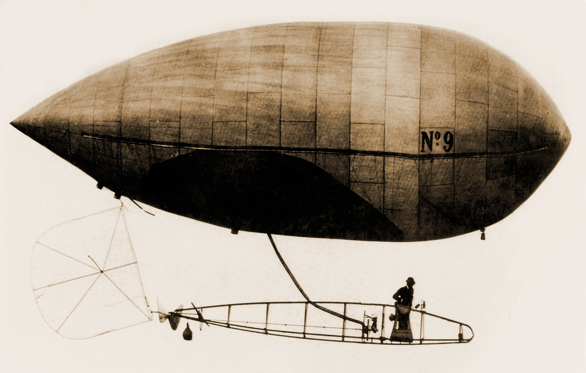
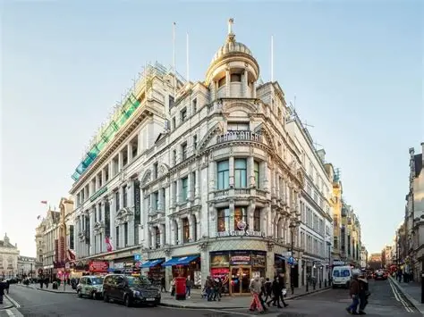

Quem foi Santos Dumont
Nascido em 20 de julho de 1873, na fazenda de café de sua família em Palmira (hoje Santos Dumont), Minas Gerais, Alberto era filho de Henrique Dumont, engenheiro que administrava uma das maiores produções cafeeiras do Brasil.
Desde criança, Alberto tinha acesso a máquinas e ferramentas modernas usadas na fazenda, o que despertou cedo seu interesse pela mecânica.
Aos 18 anos, mudou-se para Paris com a família, então o grande centro de inovação tecnológica
e científica da época. Lá, estudou física, química, mecânica e eletricidade com professores particulares, além de aprender a dirigir automóveis — ainda uma novidade absoluta.


Os balões dirigíveis movidos a gasolina:
Essa foi a grande inovação de Santos Dumont: enquanto os balões da época dependiam apenas dos ventos, ele teve a ideia de acoplar um motor de combustão a gasolina (adaptado de motores de triciclos e automóveis) a um balão alongado
permitindo que o piloto controlasse a direção e a velocidade do voo — daí o nome "dirigível". Entre 1898 e 1905, construiu uma série de dirigíveis numerados (do Brésil nº 1 ao nº 14), testando e aperfeiçoando motores, hélices e sistemas
de leme a cada novo modelo. Foi um processo de tentativa e erro, com vários acidentes — incluindo um em que ficou pendurado no telhado do Hotel Trocadéro, em Paris, sobrevivendo por pouco.
